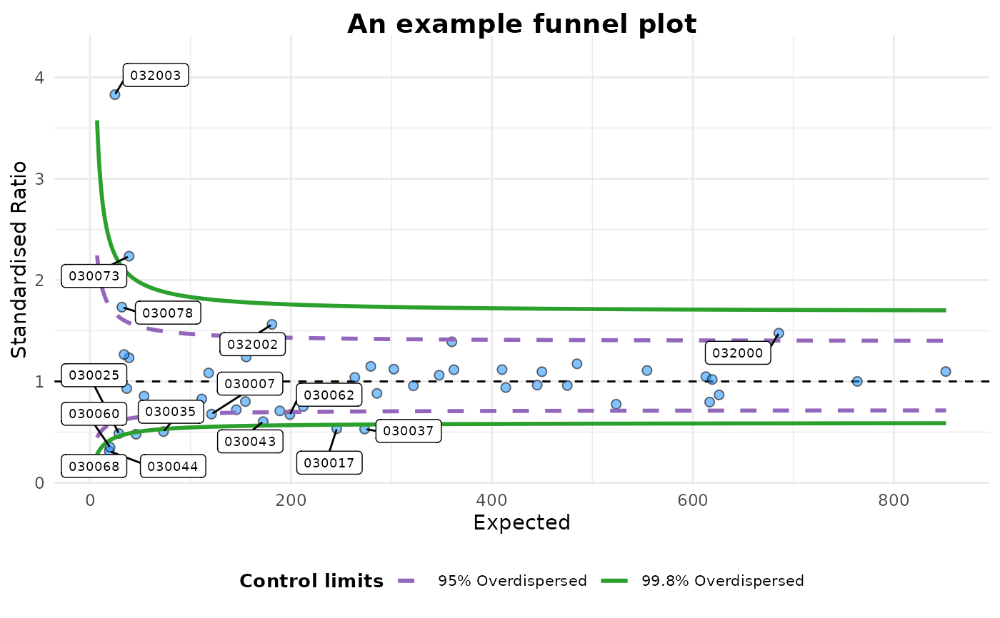

An implementation of funnel plots for indirectly standardised ratios, as described by Spiegelhalter (2005) <https://doi.org/10.1002/sim.1970/>. There are several parameters for the input, with the assumption that you will want smooth, overdispersed, funnel control limits. Limits may be inflated for overdispersion based on the methods of DerSimonian & Laird (1986), buy calculating a between unit standard deviation (\(\tau\)) and constructing an additive random effects models, originally used for meta-analyses of clinical trials data.
funnel_plot(
.data,
numerator,
denominator,
group,
data_type = "SR",
limit = 99,
label = "outlier",
highlight = NA,
draw_unadjusted = FALSE,
draw_adjusted = TRUE,
sr_method = "SHMI",
trim_by = 0.1,
title = "Untitled Funnel Plot",
multiplier = 1,
x_label = "Expected",
y_label,
x_range = "auto",
y_range = "auto",
plot_cols = c("#FF7F0EFF", "#1F77B4FF", "#9467BDFF", "#2CA02CFF"),
theme = funnel_clean(),
label_outliers,
Poisson_limits,
OD_adjust,
xrange,
yrange,
SHMI_rounding = TRUE,
max.overlaps = 10
)A data frame containing a numerator, denominator and grouping field.
A vector of the numerator (observed events/counts) values. Used as numerator of the Y-axis
A vector of denominator (predicted/population etc.) Used as denominator of the Y-axis and the scale of the x-axis
A vector of group names as character or factor. Used to aggregate and group points on plots
A string identifying the type of data used for in the plot, the adjustment used and the reference point. One of: "SR" for indirectly standardised ratios, such SHMI, "PR" for proportions, or "RC" for ratios of counts. Default is "SR".
Plot limits, accepted values are: 95 or 99, corresponding to 95% or 99.8% quantiles of the distribution. Default=99,and applies to OD limits if both OD and Poisson are used.
Whether to label outliers, highlighted groups, both or none. Default is "outlier", by accepted values are:
"outlier" - Labels upper and lower outliers, determined in relation to the `limit` argument.
"outlier_lower" - Labels just and lower outliers, determined in relation to the `limit` argument.
"outlier_upper" - Labels just upper, determined in relation to the `limit` argument.
"highlight" - Labels the value(s) given in the `highlight`argument.
"both" - Labels both the highlighted values(s), upper and lower outliers, determined in relation to the `limit` argument.
"both_lower" - Labels both the highlighted values(s) and lower outliers, determined in relation to the `limit` argument.
"both_upper" - Labels both the highlighted values(s) and upper outliers, determined in relation to the `limit` argument.
NA - No labels applied
Single or vector of points to highlight, with a different colour and point style. Should correspond to values specified to `group`. Default is NA, for no highlighting.
Draw control limits without overdispersion adjustment. (default=FALSE)
Draw overdispersed limits using hierarchical model, assuming at group level, as described in Spiegelhalter (2012). It calculates a second variance component ' for the 'between' standard deviation (\(\tau\)), that is added to the 'within' standard deviation (sigma) (default=TRUE)
Method for adjustment when using indirectly standardised ratios (type="SR") Either "CQC" or "SHMI" (default). There are a few methods for standardisation. "CQC"/Spiegelhalter uses a square-root transformation and Winsorises (rescales the outer most values to a particular percentile). SHMI, instead, uses log-transformation and doesn't Winsorise, but truncates the distribution before assessing overdisperison . Both methods then calculate a dispersion ratio (\(\phi\)) on this altered dataset. This ratio is then used to scale the full dataset, and the plot is drawn for the full dataset.
Proportion of the distribution for winsorisation/truncation. Default is 10 % (0.1). Note, this is applied in a two-sided fashion, e.g. 10% refers to 10% at each end of the distribution (20% winsorised/truncated)
Plot title
Scale relative risk and funnel by this factor. Default to 1, but 100 sometime used, e.g. in some hospital mortality ratios.
Title for the funnel plot x-axis. Usually expected deaths, readmissions, incidents etc.
Title for the funnel plot y-axis. Usually a standardised ratio.
Manually specify the y-axis min and max, in form c(min, max), e.g. c(0, 200). Default, "auto", allows function to estimate range.
Manually specify the y-axis min and max, in form c(min, max), e.g. c(0.7, 1.3). Default, "auto", allows function to estimate range.
A vector of 4 colours for funnel limits, in order: 95% Poisson (lower/upper), 99.8% Poisson (lower/upper), 95% OD-adjusted (lower/upper), 99.8% OD-adjusted (lower/upper). Default has been chosen to avoid red and green which can lead to subconscious value judgements of good or bad. Default is hex colours: c("#FF7F0EFF", "#1F77B4FF", "#9467BDFF", "#2CA02CFF")
a ggplot theme function. This can be a canned theme such as theme_bw(), a theme() with arguments, or your own custom theme function. Default is new funnel_clean(), but funnel_classic() is original format.
Deprecated. Please use the `label` argument instead.
Deprecated. Please use the `draw_unadjusted` argument instead.
Deprecated. Please use the `draw_adjusted` argument instead.
Deprecated. Please use the `x_range` argument instead.
Deprecated. Please use the `y_range` argument instead.
TRUE/FALSE, for SHMI calculation (standardised ratio, with SHMI truncation etc.), should you round the expected values to 2 decimal places (TRUE) or not (FALSE)
Exclude text labels that overlap too many things. Defaults to 10. (inherited from geom_label_repel)
A fitted `funnelplot` object. A `funnelplot` object is a list containing the following components:
Prints the number of points, outliers and whether the plot has been adjusted, and prints the plot
A ggplot object with the funnel plot and the appropriate limits
A lookup table with selected limits for drawing a plot in software that requires limits.
A data.frame of the the aggregated dataset used for the plot.
A data frame of outliers from the data.
The between-groups standard deviation, \(\tau^2\).
The dispersion ratio, \(\phi\).
Whether overdispersion-adjusted limits were used.
Whether unadjusted Poisson limits were used.
Outliers are marked based on the grouping, and the limits chosen, corresponding to either 95% or 99.8% quantiles of the normal distribution.
Labels can attached using the `label` argument.
Overdispersion can be factored in based on the methods in Spiegelhalter et al. (2012), set `draw_adjusted` to FALSE to suppress this.
To use Poisson limits set `draw_unadjusted=TRUE`.
The plot colours deliberately avoid red-amber-green colouring, but you could extract this from the ggplot object and change manually if you like.
Future versions of `funnelplotr` may allow users to change this.
DerSimonian & Laird (1986) Meta-analysis in clinical trials. <doi:10.1016/0197-2456(86)90046-2>
Spiegelhalter (2005) Funnel plots for comparing institutional performance <doi:10.1002/sim.1970>
Spiegelhalter et al. (2012) Statistical methods for healthcare regulation: rating, screening and surveillance: <doi:10.1111/j.1467-985X.2011.01010.x>
NHS Digital (2020) SHMI Methodology v .134 https://digital.nhs.uk/data-and-information/publications/ci-hub/summary-hospital-level-mortality-indicator-shmi
# We will use the 'medpar' dataset from the 'COUNT' package.
# Little reformatting needed
library(COUNT)
#> Loading required package: msme
#> Loading required package: MASS
#> Loading required package: lattice
#> Loading required package: sandwich
data(medpar)
medpar$provnum<-factor(medpar$provnum)
medpar$los<-as.numeric(medpar$los)
mod<- glm(los ~ hmo + died + age80 + factor(type)
, family="poisson", data=medpar)
# Get predicted values for building ratio
medpar$prds<- predict(mod, type="response")
# Draw plot, returning just the plot object
fp<-funnel_plot(medpar, denominator=prds, numerator=los,
group = provnum, limit=95, title="An example funnel plot")
# Methods for viewing/extracting
print(fp)

#> A funnel plot object with 54 points of which 16 are outliers.
#> Plot is adjusted for overdispersion.
plot(fp)
summary(fp)
#> A funnel plot object with 54 points of which 16 are outliers.
#> Dispersion ratio: ϕ = 8.532851 .
#> Plot is adjusted for overdispersion. Between unit variance:
#> ùúè¬≤, = 0.02841023 .
#> Outliers:
#> denominator group numerator rr target_transformed Y
#> 17 120.94 030007 82 0.6780368 0 -0.3885753
#> 28 245.61 030017 131 0.5333603 0 -0.6285476
#> 6 28.80 030025 14 0.4861594 0 -0.7213181
#> 14 73.21 030035 37 0.5054258 0 -0.6824141
#> 32 273.34 030037 145 0.5304793 0 -0.6339827
#> 21 172.38 030043 104 0.6033232 0 -0.5053104
#> 3 19.20 030044 6 0.3125609 0 -1.1631508
#> 4 19.96 030060 7 0.3506260 0 -1.0478201
#> 25 198.94 030062 134 0.6735680 0 -0.3951635
#> 12 45.87 030067 22 0.4796652 0 -0.7347689
#> 2 9.67 030068 2 0.2068827 0 -1.5758811
#> 10 38.92 030073 87 2.2352298 0 0.8043999
#> 7 31.74 030078 55 1.7329455 0 0.5497555
#> 52 685.59 032000 1012 1.4761101 0 0.3894041
#> 22 181.11 032002 283 1.5626043 0 0.4463423
#> 5 24.81 032003 95 3.8296445 0 1.3426301
#> Uzscore rk sp truncated Wuzscore s OD95LCL OD95UCL OD99LCL
#> 17 -4.273269 13 2 0 -4.273269 0.09093164 0.6870374 1.455525 0.5533126
#> 28 -9.850566 2 0 1 NA 0.06380827 0.7024099 1.423670 0.5729580
#> 6 -3.870999 16 2 0 -3.870999 0.18633900 0.6111188 1.636343 0.4600330
#> 14 -5.838929 4 0 1 NA 0.11687316 0.6689770 1.494820 0.5305541
#> 32 -10.481634 1 0 1 NA 0.06048510 0.7039943 1.420466 0.5749970
#> 21 -6.634401 3 0 1 NA 0.07616520 0.6959196 1.436948 0.5646331
#> 3 -5.096671 8 1 0 -5.096671 0.22821773 0.5734589 1.743804 0.4161366
#> 4 -4.681306 12 2 0 -4.681306 0.22383074 0.5774252 1.731826 0.4206837
#> 25 -5.573626 7 1 0 -5.573626 0.07089881 0.6987976 1.431030 0.5683191
#> 12 -4.976398 9 1 0 -4.976398 0.14765074 0.6445616 1.551442 0.5003471
#> 2 -4.900458 10 1 0 -4.900458 0.32157832 0.4908522 2.037273 0.3256333
#> 10 5.018321 50 9 1 NA 0.16029264 0.6338819 1.577581 0.4873387
#> 7 3.097227 48 8 0 3.097227 0.17749926 0.6189345 1.615680 0.4693434
#> 52 10.196068 54 9 1 NA 0.03819159 0.7126729 1.403168 0.5862128
#> 22 6.006746 51 9 1 NA 0.07430684 0.6969535 1.434816 0.5659563
#> 5 6.687592 53 9 1 NA 0.20076436 0.5982289 1.671601 0.4448276
#> OD99UCL LCL95 UCL95 LCL99 UCL99 highlight outlier
#> 17 1.807297 0.8297333 1.194925 0.7423709 1.314130 0 1
#> 28 1.745329 0.8788379 1.133198 0.8143570 1.213308 0 1
#> 6 2.173757 0.6686912 1.437947 0.5211690 1.720387 0 1
#> 14 1.884822 0.7841313 1.256939 0.6773325 1.416488 0 1
#> 32 1.739139 0.8849536 1.125850 0.8234590 1.201382 0 1
#> 21 1.771061 0.8562871 1.160931 0.7810534 1.258467 0 1
#> 3 2.403057 0.6038663 1.558062 0.4393444 1.925512 0 1
#> 4 2.377083 0.6104869 1.545079 0.4474921 1.903227 0 1
#> 25 1.759575 0.8658614 1.149033 0.7951428 1.239064 0 1
#> 12 1.998612 0.7317770 1.334400 0.6049421 1.545676 0 1
#> 2 3.070939 0.4725050 1.857410 0.2885378 2.445625 0 1
#> 10 2.051961 0.7108273 1.367468 0.5766906 1.601235 0 1
#> 7 2.130636 0.6828360 1.413670 0.5396094 1.679236 0 1
#> 52 1.705865 0.9265368 1.077739 0.8861228 1.123734 0 1
#> 22 1.766921 0.8596594 1.156719 0.7860075 1.251593 0 1
#> 5 2.248062 0.6459532 1.478364 0.4919575 1.789136 0 1
head(limits(fp))
#> number.seq s odll95 odul95 odll998 odul998 ll95
#> 1 1.100000 0.9534626 0.1499088 6.670722 0.05018164 19.927608 0.03371131
#> 2 1.951752 0.7157934 0.2366198 4.226189 0.10305763 9.703309 0.11649266
#> 3 2.803504 0.5972408 0.2963262 3.374659 0.14694390 6.805318 0.19111654
#> 4 3.655255 0.5230475 0.3405923 2.936062 0.18301425 5.464055 0.25146337
#> 5 4.507007 0.4710379 0.3751069 2.665907 0.21309812 4.692674 0.30040779
#> 6 5.358759 0.4319842 0.4029908 2.481446 0.23860393 4.191046 0.34084501
#> ul95 ll998 ul998
#> 1 5.221912 0.001776962 8.584873
#> 2 3.662330 0.021035676 5.706165
#> 3 3.021377 0.054943422 4.534074
#> 4 2.664519 0.092282260 3.886543
#> 5 2.433992 0.128280000 3.470972
#> 6 2.271243 0.161498083 3.179229
outliers(fp)
#> denominator group numerator rr target_transformed Y
#> 17 120.94 030007 82 0.6780368 0 -0.3885753
#> 28 245.61 030017 131 0.5333603 0 -0.6285476
#> 6 28.80 030025 14 0.4861594 0 -0.7213181
#> 14 73.21 030035 37 0.5054258 0 -0.6824141
#> 32 273.34 030037 145 0.5304793 0 -0.6339827
#> 21 172.38 030043 104 0.6033232 0 -0.5053104
#> 3 19.20 030044 6 0.3125609 0 -1.1631508
#> 4 19.96 030060 7 0.3506260 0 -1.0478201
#> 25 198.94 030062 134 0.6735680 0 -0.3951635
#> 12 45.87 030067 22 0.4796652 0 -0.7347689
#> 2 9.67 030068 2 0.2068827 0 -1.5758811
#> 10 38.92 030073 87 2.2352298 0 0.8043999
#> 7 31.74 030078 55 1.7329455 0 0.5497555
#> 52 685.59 032000 1012 1.4761101 0 0.3894041
#> 22 181.11 032002 283 1.5626043 0 0.4463423
#> 5 24.81 032003 95 3.8296445 0 1.3426301
#> Uzscore rk sp truncated Wuzscore s OD95LCL OD95UCL OD99LCL
#> 17 -4.273269 13 2 0 -4.273269 0.09093164 0.6870374 1.455525 0.5533126
#> 28 -9.850566 2 0 1 NA 0.06380827 0.7024099 1.423670 0.5729580
#> 6 -3.870999 16 2 0 -3.870999 0.18633900 0.6111188 1.636343 0.4600330
#> 14 -5.838929 4 0 1 NA 0.11687316 0.6689770 1.494820 0.5305541
#> 32 -10.481634 1 0 1 NA 0.06048510 0.7039943 1.420466 0.5749970
#> 21 -6.634401 3 0 1 NA 0.07616520 0.6959196 1.436948 0.5646331
#> 3 -5.096671 8 1 0 -5.096671 0.22821773 0.5734589 1.743804 0.4161366
#> 4 -4.681306 12 2 0 -4.681306 0.22383074 0.5774252 1.731826 0.4206837
#> 25 -5.573626 7 1 0 -5.573626 0.07089881 0.6987976 1.431030 0.5683191
#> 12 -4.976398 9 1 0 -4.976398 0.14765074 0.6445616 1.551442 0.5003471
#> 2 -4.900458 10 1 0 -4.900458 0.32157832 0.4908522 2.037273 0.3256333
#> 10 5.018321 50 9 1 NA 0.16029264 0.6338819 1.577581 0.4873387
#> 7 3.097227 48 8 0 3.097227 0.17749926 0.6189345 1.615680 0.4693434
#> 52 10.196068 54 9 1 NA 0.03819159 0.7126729 1.403168 0.5862128
#> 22 6.006746 51 9 1 NA 0.07430684 0.6969535 1.434816 0.5659563
#> 5 6.687592 53 9 1 NA 0.20076436 0.5982289 1.671601 0.4448276
#> OD99UCL LCL95 UCL95 LCL99 UCL99 highlight outlier
#> 17 1.807297 0.8297333 1.194925 0.7423709 1.314130 0 1
#> 28 1.745329 0.8788379 1.133198 0.8143570 1.213308 0 1
#> 6 2.173757 0.6686912 1.437947 0.5211690 1.720387 0 1
#> 14 1.884822 0.7841313 1.256939 0.6773325 1.416488 0 1
#> 32 1.739139 0.8849536 1.125850 0.8234590 1.201382 0 1
#> 21 1.771061 0.8562871 1.160931 0.7810534 1.258467 0 1
#> 3 2.403057 0.6038663 1.558062 0.4393444 1.925512 0 1
#> 4 2.377083 0.6104869 1.545079 0.4474921 1.903227 0 1
#> 25 1.759575 0.8658614 1.149033 0.7951428 1.239064 0 1
#> 12 1.998612 0.7317770 1.334400 0.6049421 1.545676 0 1
#> 2 3.070939 0.4725050 1.857410 0.2885378 2.445625 0 1
#> 10 2.051961 0.7108273 1.367468 0.5766906 1.601235 0 1
#> 7 2.130636 0.6828360 1.413670 0.5396094 1.679236 0 1
#> 52 1.705865 0.9265368 1.077739 0.8861228 1.123734 0 1
#> 22 1.766921 0.8596594 1.156719 0.7860075 1.251593 0 1
#> 5 2.248062 0.6459532 1.478364 0.4919575 1.789136 0 1
head(source_data(fp))
#> denominator group numerator rr target_transformed Y
#> 46 523.70 030001 406 0.7752585 0 -0.2545658417
#> 48 612.98 030002 642 1.0473450 0 0.0462559947
#> 13 53.79 030003 46 0.8551559 0 -0.1564461798
#> 53 763.72 030006 764 1.0003694 0 0.0003665593
#> 17 120.94 030007 82 0.6780368 0 -0.3885753076
#> 29 250.19 030008 201 0.8034022 0 -0.2189157211
#> Uzscore rk sp truncated Wuzscore s OD95LCL OD95UCL
#> 46 -5.82561011 5 0 1 NA 0.04369771 0.7108599 1.406747
#> 48 1.14522594 37 6 0 1.14522594 0.04039028 0.7119760 1.404542
#> 13 -1.14740235 25 4 0 -1.14740235 0.13634814 0.6538255 1.529460
#> 53 0.01013004 31 5 0 0.01013004 0.03618536 0.7132769 1.401980
#> 17 -4.27326850 13 2 0 -4.27326850 0.09093164 0.6870374 1.455525
#> 29 -3.46267654 18 3 0 -3.46267654 0.06322153 0.7026948 1.423093
#> OD99LCL OD99UCL LCL95 UCL95 LCL99 UCL99 highlight outlier
#> 46 0.5838633 1.712730 0.9161767 1.089431 0.8703859 1.142533 0 0
#> 48 0.5853093 1.708499 0.9223928 1.082393 0.8798183 1.131211 0 0
#> 13 0.5117322 1.954147 0.7507815 1.305456 0.6309291 1.497241 0 0
#> 53 0.5869963 1.703588 0.9303262 1.073510 0.8918993 1.116945 0 0
#> 17 0.5533126 1.807297 0.8297333 1.194925 0.7423709 1.314130 0 1
#> 29 0.5733244 1.744213 0.8799161 1.131898 0.8159596 1.211196 0 0
phi(fp)
#> [1] 8.532851
tau2(fp)
#> [1] 0.02841023